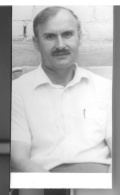

Анатолий Павлов
(1937 - 2014)
Ставрополь
"Литературный Кисловодск", N4 (2000)
ЦВЕТНЫЕ СНЫ
Уход - приход, расход - доход -
Всё перепуталось корнями...
Рутинных дел рутинный ход
Прервётся вдруг цветными снами.
Покуда живы мать с отцом,
Я мальчик с цыпками на коже.
Мир чёрной зависти и ссор
Ещё мне душу не тревожит.
Я мал, и так огромен мир,
Но, видимо, чего-то стою:
Стою. Вдруг шариком цветным
Взлетел над спящею землёю.
Чудно: мне чудо по плечу!
Совсем не страшно видеть крыши...
Кричу: "Смотрите! Я лечу!"...
Но люди спят, они не слышат.
Спят мать с отцом, и братья спят,
На время отогнав заботы,
А я лечу, а я распят
На траектории полёта...
Лесок я вижу там, внизу,
Да жёлтый керосин деревни,
Реки стальную полосу
И снова малахит деревьев...
Цветные сны... Но жизнь уже
Всё реже дарит сновиденья,
И падать дрябнущей душе
Больней на камни пробужденья.
"Литературный Кисловодск", N44-45 (2012)
ОТНОСИТЕЛЬНОСТЬ
В нашем мире всё так относительно:
Долог век относительно дня,
Смех начальства, и слёзы просителей,
И трава относительно пня.
Относительны сытые лица -
Бледным лицам голодных детей
И пушистый комочек синицы -
Жёсткой графике голых ветвей.
Относительны мы, и природа,
И, наверное, вечный удел -
Несогласье вождей и народа,
Относительность планов и дел.
Долг отца относительно сына...
Относительность зла и добра...
И цена наша, друг мой доныне, -
Что умеем: давать или брать...
КАРАМЗИН
В России, как всегда,
чиновник хочет взятки.
В России, как всегда, у власти дураки.
В России каждый раб хотел
пожить бы сладко,
Да вот беда - работать не с руки.
В России, как всегда, плюют на человека,
А волки стерегут доверчивых ягнят.
В России, как всегда, бросают щуку в реку,
Когда злодейку наказать хотят.
Писатель Карамзин,
создатель "Бедной Лизы",
В Европы хочет совершить вояж,
И это есть не следствие каприза,
А твёрдое веленье бытия.
Нахлынуло влеченье к дальним странам:
Изъездить Апеннин большой сапог,
Изведать прелести лукавых итальянок
И увидать Везувия дымок...
Так радостны, так хлопотливы сборы,
Так странны ощущенья естества...
Так хорошо, что не увидит скоро
Навоза, галок, пьянства, воровства...
Скрипит коляска... Чувствия другие
Придётся скоро осознать уже:
Есть хворь души с названьем ностальгия -
Чем дальше родина, тем горше на душе.
И там, где рыбаки влекут из моря невод,
Певуче говоря между собой,
Под голубым бездонным южным небом
До боли вдруг захочется домой.
* * *
До чего же сердце радо,
Если всей душою ждёшь
Перемены - и награда -
Долгожданный летний дождь.
Ах, какое благо - влага!
Молишь: пусть побольше льёт!
Лето. Перезревший август.
Золотые соты. Мёд.
И зимою бесконечной
Под морозный снежный скрип
Вдруг твои представлю плечи,
Загорелых рук изгиб.
И перед глазами снова:
Жаркий август на дворе.
Лето. Зной. И в этом зное -
Ты, как солнце в янтаре.
ОСЕНЬ ЖИЗНИ
Осенних туманов рваньё
Опало на плечи полям.
Обугленное вороньё
Обсиживает тополя.
Оплёванная душа,
Оставив любовь и друзей,
Отчаливает не спеша,
Оглядываясь, как Орфей.
* * *
Там, где тайна стоит на часах.
У границы пространства и времени,
Поборов нетерпенье и страх,
Я прижался к прохладному стремени.
Конь белейшего снега белей...
Этот сгусток непостоянства
Торопился изведать скорей
Искривлённое далью пространство.
- Тайна, дай отправления знак,
Дай узнать, где концы изначалий!
- Что ж, ступай, только должен ты знать:
Бремя мудрости - бремя печали...
"Литературный Кисловодск", N46 (2012)
ПУГАННЫЕ ВОРОНЫ
Кончается зима, но в бегстве угрожает
Испортить людям приходящий день.
Снег хмуро тает, землю обнажая
И мусора гнилую дребедень.
А хочется гармонии, порядка,
Устал народ от зимних передряг.
Всем видятся ухоженные грядки
И дружных всходов изумрудный ряд.
На сердце ощущенье непокоя,
Раб Божий ожиданием томим:
Когда ж гроза весь этот мусор смоет
И вновь увидит он нормальный мир?
* * *
Из-под неплотно прикрытых дверей
памяти - клинышек света
сердца коснулся; припомни скорей:
кто-то... когда-то... где-то...
Позабывалось... Ах, жалость! Но всё ж
было - и нежно, и свято -
то что в себе потаённо несёшь:
кто-то... где-то... когда-то...
То что и третьему доверять
боязно и неохота...
Не торопись отворять... притворять...
Как заклинанье, начни повторять:
Где-то... когда-то... кто-то...
* * *
Ах, какая нынче странная,
Беспокойная весна:
То я сплю усталым странником,
То измучаюсь без сна.
Ну, куда теперь причалю я?
Ходят корабли мои
Между островом Отчаянья
И атоллами любви...
* * *
Весна! Выставляется первая рама...
А. Майков
В эту оттепель я не верю.
Не советую верить вам...
Вы откроете окна и двери,
Чтоб услышать скворчиный гам,
Чтоб беззвучные взрывы почек
Разбудили надежду в душе...
Это было всё, между прочим,
Это было не раз уже.
Торопились и веселились -
О весна, ты желанный гость!
А наутро морозы резвились,
И сердца промерзали насквозь,
И калёная, злая стужа
Начинала до дрожи бить...
О людские тёплые души,
Не спешите наивными быть!
* * *
Каждый год, как закрытая дверь
В дом, наполненный сумраком таинств,
Где, быть может, ждёт лето потерь,
А возможно, весна ожиданий.
Я не жду ожиданий весну,
Впереди - только поздняя осень,
Потому что надежды из рук
Улетели кормиться на озимь.
Ветер тонко свистит в камыше,
Свет на западе блекнет и меркнет.
Одиноко и грустно душе,
Как бродяге в разрушенной церкви.
Зябко стынут душа и жнивьё,
Предстоящую зиму встречая,
И уныло кружит вороньё,
Как чаинки в остынувшем чае.
"Литературный Кисловодск", N47 (2012 г.)
ЗАГАДКА
Былое исчезло в тумане,
А дальше - унылый простор...
У нас на скамье под каштаном
Последний с тобой разговор.
Был майский безветренный вечер,
и месяц желтел, как банан;
нам розово-белые свечи
Зажёг над бульваром каштан.
Как осенью жёлуди с дуба,
С каштана срывались жуки...
о эти поджатые губы,
о дрожь побледневшей щеки
и вымученная улыбка!
обоим понятно без слов,
Что наша взаимная пытка -
Болезненное ремесло.
Прощенье вымаливать поздно,
Да, видно, уже не с руки...
Холодной зелёною бронзой
отсвечивают жуки.
Молчим. ни к чему уже речи.
не сбыться наивным мечтам...
и грустно гасил свои свечи
над нами весенний каштан.
* * *
Фески красные. небо гулкое,
выцветающее от жары.
не бродил я пока переулками
пряно пахнущей Анкары.
но порою привидится ясно мне,
что я жил там. не год - века...
небо гулкое. Фески красные.
Запах чёрного табака...
или улицею гаваны,
как во сне, наяву бредёшь,
и вдруг станет щемяще странно,
будто встречи какой-то ждёшь.
Точно: встретится шрам на коже
или выцветший взгляд старика, -
я поклясться готов: здесь тоже
жил не месяцы, а века...
Так брожу, а со мной немилая
мысль, как будто в бредовом сне:
может, вечно живу в этом мире я?
или мир вечно жив во мне?
Куба. Гавана. 1963
* * *
Как ночь темна. и душно как...
наш город под бензинным облаком,
как будто житель кишлака,
потея, спит под душным войлоком.
от моря йодом шпарит в нос,
как из бутылки минеральной...
Краснеют точки папирос
и точки бакенов сигнальных.
Хотя б подобье ветерка...
нет, не дождаться нам Борея...
Домой - хлебнуть глоток пивка
да завалиться спать скорее.
Бредет автобус "Порт - горсад",
устал, трясёт боками впалыми;
его тяжелый низкий зад
проштемпелёван стоп-сигналами.
* * *
осень душу тревожит.
осень ошибки итожит.
Сложит, и перемножит,
и птичьим взмахнёт крылом.
осень дышит туманом,
Правдою и обманом,
ветром, печалью пьяным
от памяти о былом.
осень - пора листопада
Кем-то взращённого сада,
грусти щемящий осадок
и холодок на душе.
Ещё ничего не сделал,
Ещё собирался сделать,
А жизнь-то уже пролетела,
Её не воротишь уже...
"Литературный Кисловодск", N50 (2013)
ВЧЕРАШНЕЙ НОЧЬЮ
Лишь только ночью я смежил глаза,
И вещий сон мне освинцовил веки,
Я вдруг вдали услышал голоса
И к ним пошёл, к тем, кто ушёл навеки.
Среди деревьев виден белый дом,
Покрытый оцинкованною крышей,
Вокруг забор, окутанный плющом,
А за оградой их, родимых, вижу.
Стою я, отгороженный плющом,
Со сдержанным волненьем наблюдаю,
Как за здоровье тех, кто жив ещё,
Весь стол обходит чаша круговая.
Здесь мать с отцом. и старый верный друг,
И дочка милая, ушедшая так рано,
И братья - все зовут меня в свой круг,
Зовут в свой мир,
блаженный и желанный.
Они собрались за большим столом,
Покрытым новой клетчатой клеёнкой.
Здесь миски, полные наваристым борщом,
И хлеб ржаной в соломенной плетёнке.
Картошка круглая окутана парком,
А в центре - деревянная солонка.
Тарелка с золотистым балыком
И ветчина, нарезанная тонко.
Мать говорит мне: "Ну, садись, не стой!" -
И братьям предлагает потесниться,
А мне скорее проходить за стол,
Где ждут давно меня родные лица.
И я, конечно, тороплюсь за стол,
Рад, что родных мне довелось проведать,
Но тут отец промолвил вдруг: "Постой,
Ты сделал всё, что надо было сделать?"
"Конечно, нет, скорей наоборот,
Не избежал я общего удела:
Жизнь такова, что дел невпроворот,
Боюсь, их никогда не переделать".
Отец сказал: "Ты огорчаешь нас,
Торопишься, пока ты нужен людям...
Мы позовём, когда пробьёт твой час,
Тогда придёшь, и вместе вечно будем".
Я ухожу... Всё тише голоса,
Кончается сакральная прогулка...
Я просыпаюсь. Влага на глазах,
А сердце бьётся бешено и гулко.
"Литературный Кисловодск", N59 (2016)
* * *
Фески красные. Небо гулкое,
выцветающее от жары.
Не бродил я пока переулками
пряно пахнущей Анкары.
но порою привидится ясно мне,
что я жил там не год - века...
небо гулкое. фески красные.
Запах чёрного табака.
Или улицею Гаваны,
как во сне, наяву бредёшь,
станет вдруг так щемяще странно,
будто встречи какой-то ждёшь.
Точно: встретится шрам на коже
или выцветший взгляд старика -
я поклясться готов: здесь тоже
жил не месяцы, а века...
Так брожу, а со мной немилая
мысль, как будто в бредовом сне:
может, вечно живу в этом мире я,
или мир этот жив во мне?
* * *
Я хотел бы уйти из жизни
Так же мгновенно и просто,
Как тает в вечерней тинте
голубоватая искра
из-под конской подковы,
Цокающей по брусчатке...
* * *
источник вы... А я стою над вами,
Смотрю в хрустальную
задумчивость души,
Боясь взмутить её доверчивость губами,
Уже познавшими отраву лёгкой лжи.
я вам клянусь: я вас не потревожу,
Хоть жажда одуряюще сильна.
Пусть выпьет вас - кто чище и моложе...
И будьте счастливы, не знающая дна.
* * *
Ивану Аксёнову
Всё больше дорогих теней
на дальнем берегу маячит,
на роковом, и это значит -
всё меньше остается дней
Дышать, терпеть, смеяться, плакать,
И ненавидеть, и любить,
смотреть, зависеть, просто быть -
Быть здесь - до горестного знака.
ДЕКАБРЬСКИЕ СТИХИ
Тучи землю утюжат.
ветры плачут со всхлипом.
дышат севером, стужей,
Подступающим гриппом.
стали люди позлее,
А морозы - кусачей.
От декабрьских метелей,
Плача, слепнет и зрячий.
вороньём в поднебесье
Кликать зло не устали
в грязных градах и весях
депутатские стаи.
над речами пигмеев
время едко хохочет,
стали ночи длиннее,
А надежды короче.
ненадёжна дорога
в этой замяти снежной...
ни на власть, ни на Бога -
на себя лишь надежда.
И, в борениях стоек,
в телогрейке на вате,
злее бьется с нуждою
Рядовой обыватель.
1992
"Литературный Кисловодск", N60 (2016)
ОСЕННИЙ ЭТЮД
Поспела осень. Грузно никнут ветки.
Слепых небес усталая вина.
Лоза пришла во двор -
и всё, и даже ветер,
Чуть-чуть хмельны от первого вина.
На рынке русской речи сочный сгусток,
Здесь каждый - будь не промах,
будь не плох.
Вот с воза продают, и кочаны капусты
Скрипят ансамблем хромовых сапог.
А там грибы. А там грузин с гранатом,
Зовущим всех рубиновой искрой;
Румянец яблок здесь,
а там, маня развратом,
как груди, груды груш лежат горой.
тут птицу продают -
и гвалт капитолийский,
И ветра свист, и крупный снег пера,
А там последняя румяная редиска
Вниманья требует, и масла, и пера.
...Богата осень, но несёт с собой тревогу
Под крики птиц на тающем крыле:
Ведь осень - время подведения итогов
того что сделано тобою на земле.
А сделанное - скудно и ничтожно:
Всё недосуг - то служба, то друзья.
А жизнь не ждёт... И горько и тревожно
В глаза глядит закатная звезда.
Прозрачным, лёгким головокруженьем
жизнь отшумит, быстра и коротка...
Ах, если б взять туда
весёлой птахи пенье,
Брусничный вкус воды из родника!
* * *
как нервно всё и как неверно,
как неподатливы слова,
когда всё верное - НАВЕРНо,
как прошлогодняя трава,
когда работой и заботами
Распят на тысяче Голгоф
И, расслабляя нервы водкою,
клянёшь и смертных, и богов...
В такие трудные мгновения,
когда теряются пути,
так нужно лишь прикосновение
Любимой ласковой руки...
Но, утешая, не погладит
твоя шершавая рука,
И всё во внутреннем разладе:
И я, и нервная строка...
* * *
Написано: "В начале было Слово"...
А мы уже устали от словес.
они измучили нас так, как будто снова
Разверзлись хляби мутные небес.
к словам теперь я отношусь сурово,
Я знаю: правда жизни такова -
Итогом слова будет только слово,
Итогом дела - мясо, хлеб, трава.
Вот потому я заявляю смело:
давайте прекратим словес потоп
И порешим: в начале будет дело,
А все слова - потом, потом, потом...
"Литературный Кисловодск", N61 (2016)
* * *
Итак, будьте мудры, как змии,
и просты, как голуби.
Матф, 10, 16
Наш грешный мир порочен и несносен, -
Таков его неписаный устав.
При жизни мы святых всегда поносим,
Когда умрут - несём на пьедестал.
Какою мерою наивность нам измерить,
Слепую неразборчивость в вождях?
Вначале их словам излишне верим,
А после сомневаемся в делах.
В нас от Адама демон отрицанья.
Нам прошлые дела сегодня мстят.
И, как всегда, благие пожеланья
Дорогу в ад нам, дуракам, мостят.
В своей слепой гордыне, не умея
Умнеть, мы сбились с верного пути.
Как видно, никогда нам мудрость змея
И кротость голубя уже не обрести.
1991
ПУШКИН В МИХАЙЛОВСКОМ, ЗИМА
Чёрный пёс на снегу Мефистофелем
кружит, фыркает на бегу...
Ну а здесь - ни черта, только профили
тешат глаз на бумажном снегу.
Ветер в ставню колотит размеренно
и дурашливо воет в трубе...
мне б сейчас, ворожея Ксаверьевна,
головой да в колени к тебе.
Пусть на плахе лежит, бесшабашная,
под раскосой секирою глаз,
так зато буду знать, что незряшная
жизнь была... Ну погладь же, погладь
лоб горячий и эту курчавину,
как одна ты умела, погладь!
Эх, завыть бы по-волчьи, отчаянно,
да не хочется няньку пугать!
Некролог Анатолию Павлову
Иван Аксёнов. "ПОЭЗИЯ - СЕСТРА РОДНАЯ ТАЙНЫ" (о жизни и творчестве Анатолия Павлова)
Владимир Игнатов. Памяти поэта и друга (о поэте Анатолии Павлове)
Страница "Литературного Кисловодска"
Страницы авторов "Литературного Кисловодска"
Последнее изменение страницы 23 Jul 2020
ПОДЕЛИТЬСЯ: